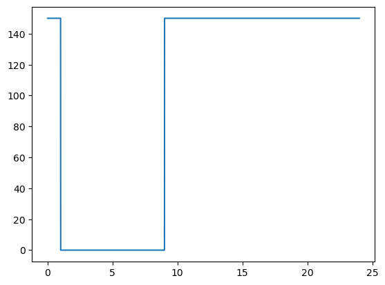
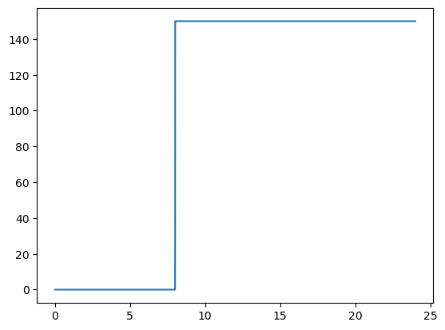
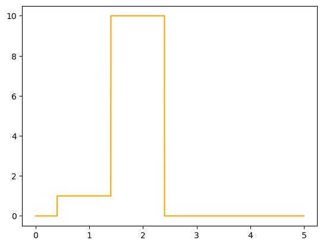
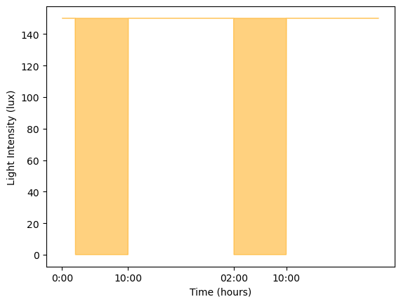
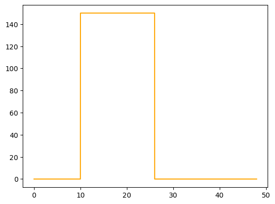
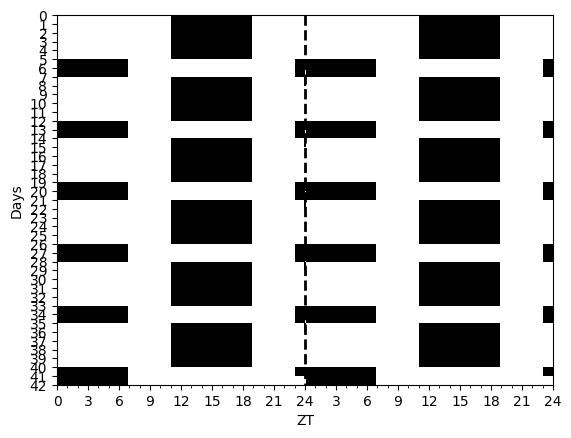
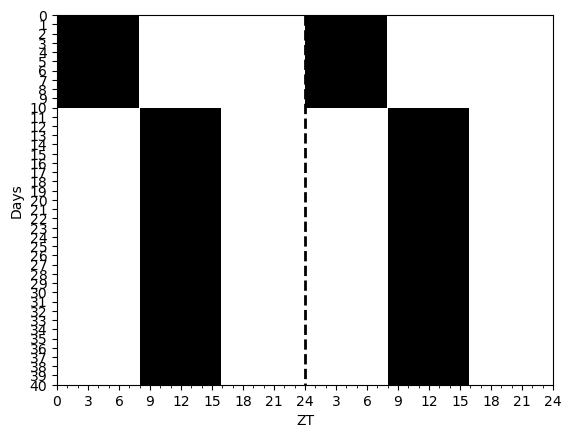
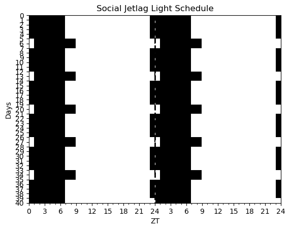

lf_init = Light(lambda t: 1.0, start_time=0.0, duration=1.0)
lf_init_from_float = Light(1.0, start_time=0.0, duration=1.0) # creates a consant light function from the float value
test_eq(lf_init([0.5]), 1.0)
test_eq(lf_init_from_float([0.5]), 1.0)Lights
Defines some light schedules for building circadian models
Light
Light (light:<built-infunctioncallable>, start_time:float=0.0, duration:float=1.0, default_value=0.0)
Initialize self. See help(type(self)) for accurate signature.
| Type | Default | Details | |
|---|---|---|---|
| light | callable | light function that takes in a time value and returns a float, if a float is passed, then the light function is a constant set to that lux value | |
| start_time | float | 0.0 | when the light function starts in hours |
| duration | float | 1.0 | duration of the light function in hours |
| default_value | float | 0.0 | the default value of the light function when it is not active |
Some Common Schedules
get_pulse
get_pulse (t:float, t1:float, t2:float, repeat=False, Intensity:float=150.0)
make_pulse
make_pulse (t, tstart, tend, steep:float=30.0)
LR_test = Light.RegularLight(lights_on=9.0, lights_off=1.0)
LR_test.plot(0.0, 24.0);
LR_test = Light.RegularLight(lights_on=8.0, lights_off=0.0)
LR_test.plot(0.0, 24.0);

light_sum = Light(1.0, start_time=0.4, duration=1.0) + Light(10.0, start_time=3.0, duration=1.0)
light_sum.plot(0.0, 5.0, color='orange');
LR = Light.RegularLight(lux=150.0, lights_on=10.0, lights_off=2.0)
timepoints = np.linspace(0, 48, 1000)
light_values = LR(timepoints, repeat_period=24.0)
plt.fill(timepoints, light_values, color='orange', alpha=0.5);
plt.xticks([0, 10, 26, 34], ['0:00','10:00', '02:00', '10:00']);
plt.ylabel('Light Intensity (lux)');
plt.xlabel('Time (hours)');
lf = Light(lambda t: 150.0, start_time=10.0, duration=16.0)
lf.plot(start_time=0.0, end_time=48.0, color='orange');
test_eq(lf(np.array([10.0])), 150.0)
test_eq(lf(np.array([2.0])), 0.0)
test_eq(lf(np.array([34.0]), repeat_period=24.0), 150.0) # should repeat every 24 hours# can pass in a list and get an numpy array back
test_eq(type(lf([2.0])), np.ndarray)from circadian.plots import Actogram
sw_light = Light.ShiftWorkLight(dayson=5, daysoff=2)
ts = np.arange(0, 24*7*6, 0.10)
light_values = sw_light(ts, repeat_period=24*7)
Actogram(ts, light_vals=light_values, smooth=False);
slam_shift = Light.SlamShift(shift=8.0,
before_days=10,
after_days=40)
ts = np.arange(0, 24*40, 0.10)
light_values = slam_shift(ts)
Actogram(ts, light_vals=light_values, smooth=False);
social_jl = Light.SocialJetlag()
ts = np.arange(0, 24*40, 0.10)
light_values = social_jl(ts, repeat_period=24*7)
Actogram(ts, light_vals=light_values, smooth=False);
plt.title("Social Jetlag Light Schedule");